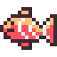
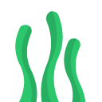
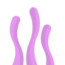

AI agents are simpler than you think. Three concepts, one metaphor, and a live reconstruction.


Text in, text out. Stateless. Smart but alone.
Marlin's brainWhat it does: takes a prompt, produces a completion. One call, no memory of previous calls.
Examples: Claude (Anthropic), GPT-4 (OpenAI), Gemini (Google), Llama (Meta), Mistral, Command R (Cohere)
Key insight: the model is a function — f(prompt) = completion. It cannot read files, browse the web, or remember you.
A model in a loop with tools. Decides, acts, observes, repeats.
Marlin with fins and eyesThree ingredients: the model (brain), the loop (persistence), the tools (hands).
The model decides everything — what tool to call, when to stop, how to combine results. The "agent framework" is just a while loop.
Examples: Claude Code, Cursor Agent, Devin, Cline, Aider, Open Interpreter
Everything the model can see. Its working memory. The real differentiator.
Marlin vs Dory -- same brain, different capacityContext = prompt + history + tool results. It's all just text stacked in a window.
When full: oldest parts get compacted (summarized or dropped). This is why long sessions degrade.
Sizes: 8K (small), 128K (standard), 200K (large), 1M (Claude Opus)
Bash run shell commandsRead read files + imagesWrite create filesEdit modify filesGrep search contentGlob find files by patternTask spawn subagentsWebSearch search the internetStep through an example execution. Watch context grow, fill, and get compacted.
Configuration files that shape agent behavior. Same pattern across tools -- different paths.
Write in an editor. Read it twice. Dehumanize -- you're configuring a system, not chatting.
Create skills, agents, reusable context. Write instructions once, reuse forever.
Don't teach the model to be smart. Give it the right information. Your job is congruence.
Every wasted token is a wasted thought. Plan before you execute.
How an agent built the Finding Memo presentation. Each step is the loop in action.